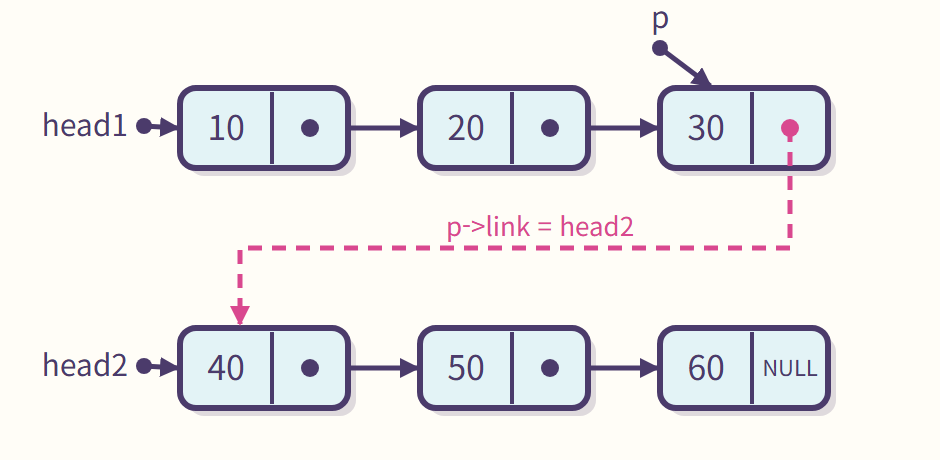
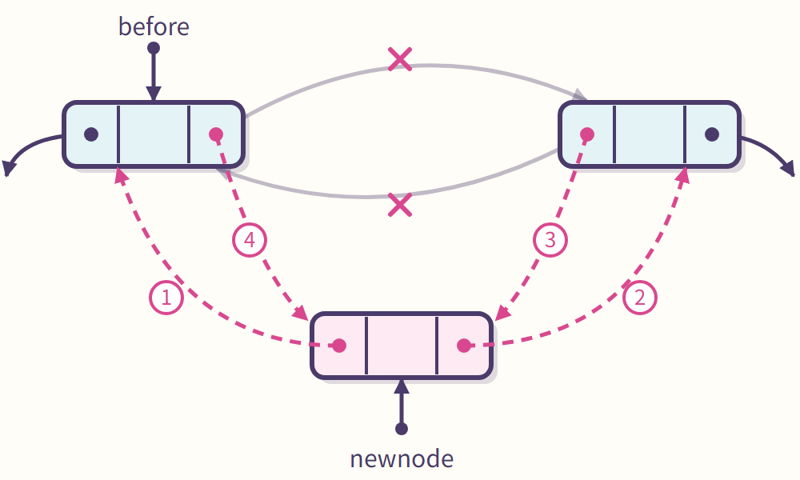
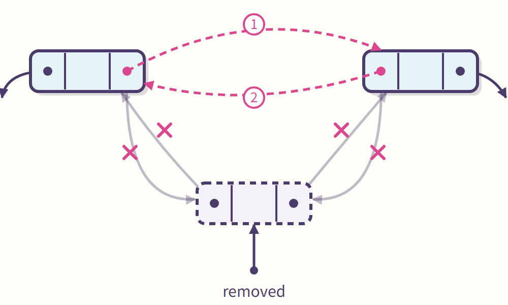
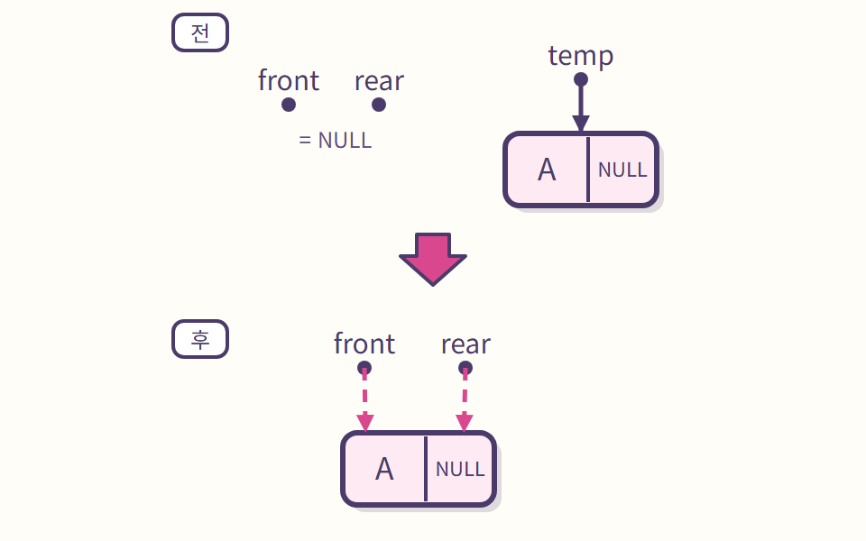
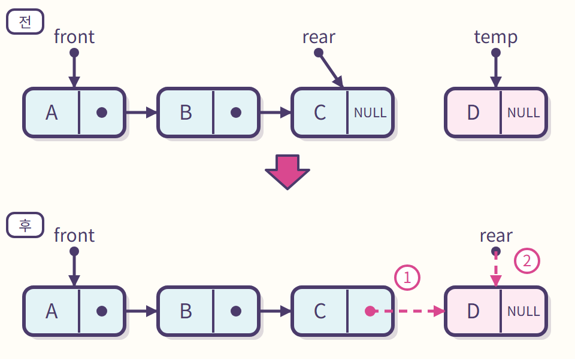

1.2.1
배열 연산 & 응용
배열 연산 & 응용
아직 비어 있어요.
아직 비어 있어요.
| struct ListNode { int data; struct ListNode *link; // 링크 = 포인터. 따라서 헤드포인터와 대등하게 연산 가능 }; // 포인터: 노드를 가리킬 수 있는 실가닥 있는 애. // 항상 노드전체를 가리키고있음 원본과 다름 · 원본: “struct Listnode {” · “struct node *link;” · 끝의 “}” (구조체 이름을 ListNode 로 맞추고 ; 붙임) |

| ① p->link = head; | 포인터 대 포인터. (헤드포인터 p가 가리키던 노드의 link라는 저장소)에 head가 가리키던 값을 복사해서 가리킨다. |
| ② head = p; | 헤드포인터 head 라는 저장소에, p가 가리키던 값을 복사해서 가리킴 |

| ① p->link = pre->link; | 헤드포인터 p가 가리키던 노드의 link라는 저장소에 헤드포인터 pre가 가리키는 노드의 link가 가리키던 값을 복사해서 가리킴 |
| ② pre->link = p; | 헤드포인터 pre가 가리키는 노드의 link라는 저장소에 헤드포인터 p가 가리키던 값을 복사해서 가리키게 한다 |

| ListNode *removed; | (노드를 가리킬 수 있는) 포인터 선언 |
| ① removed = head; | removed 포인터라는 저장소가 head가 가리키는 값을 복사해서 가리키게 만든다 |
| ② head = removed->link; | head 포인터 저장소에 removed 포인터가 가리키는 노드의 link의 값을 복사해서 가리키게 만든다 |
| ③ free (removed); | removed가 가리키는 노드의 메모리 반환 원본과 다름 · 원본: “헤드포인터 반환” (free 는 포인터가 아니라 노드 메모리를 돌려줌) |

| ListNode *removed; | (노드를 가리킬 수 있는) 포인터 선언 |
| ① removed = pre->link; | removed 포인터라는 저장소가 pre 포인터가 가리키는 노드의 link 값을 복사해서 가리키게 만든다 (가닥 대 가닥으로 복사) |
| ② pre->link = removed->link; | pre 포인터가 가리키는 노드의 link 저장소에 removed 포인터가 가리키는 노드의 link의 값을 복사해서 가리키게 만든다 |
| ③ free (removed); | removed가 가리키는 노드의 메모리 반환 원본과 다름 · 원본: “헤드포인터 반환” |

| ListNode* concat_list(ListNode *head1, ListNode *head2) { if (head1 == NULL) return head2; else if (head2 == NULL) return head1; else { ListNode *p; p = head1; while (p->link != NULL) p = p->link; p->link = head2; return head1; } } |
| p = head1; | 포인터 p라는 저장소에 head1이 가리키던 값을 복사해서 가리키게 만든다 |
| while (p->link != NULL) p = p->link; | p가 순회한다. null 값을 가진 link를 만날 때까지 |
| p->link = head2; | 멈춘 자리는, 포인터 p가 가리키는 노드의 link값이 null이다. 그 노드의 link 저장소에 head2 포인터가 가리키는 값을 복사해서 가리키게 함 |

| ListNode* reverse(ListNode *head) { // 순회 포인터로 p, q, r을 사용 ListNode *p, *q, *r; p = head; // p는 역순으로 만들 리스트 q = NULL; // q는 역순으로 만들 노드 while (p != NULL) { r = q; // r은 역순으로 된 리스트. // r은 q, q는 p를 차례로 따라간다. q = p; p = p->link; q->link = r; // q의 링크 방향을 바꾼다. } return q; } |

| p = head; | p라는 포인터에 head가 가리키던 값을 복사해 가리키게 한다 (head 대체하며 시작) |
| q = NULL; | |
| while (p != NULL) | |
| { r = q; | 포인터 r는 q가 가리키던 값을 복사해 가리킨다 (이번 턴에 가리키고 싶은 앞이 될 노드 r = 현재 q가 가리키는 중) |
| q = p; | 포인터 q는 p가 가리키는 값을 복사해서 가리킨다 (q 전진시키기) |
| p = p->link; | 포인터 p는 (p가 가리키는 노드의 link) 라는 포인터가 가리키는 값을 복사해서 가리킨다 (p 전진시키기) |
| q->link = r; } | (q가 가리키는 노드의 link = 현재노드)라는 저장소에 r이 가리키는 값을 복사해 가리키게함 (링크 방향을 역순으로) |
| return q; |

| node->link = head->link; | 새롭게 삽입할 노드의 link라는 저장소가 포인터 head가 가리키던 노드의 link가 가리키고 있던 값을 복사해서 가리킨다 |
| head->link = node; | 포인터 head가 가리키던 노드의 link라는 저장소는, 포인터 node가 가리키는 값을 복사해서 가리킨다 |

| node->link = head->link; | (포인터 node가 가리키는 노드의 link라는 저장소)가 (포인터 head가 가리키는 노드의 link라는 저장소가 가리키는 값)을 복사해서 가리키게 한다 |
| head->link = node; | (포인터 head가 가리키는 노드의 link라는 저장소)가 (포인터 node가 가리키는 값)을 복사해서 가리키게 한다 |
| head = node; | (포인터 head라는 저장소)가 (포인터 node가 가리키는 값)을 복사해서 가리킴 |

| DListNode *newnode = (DListNode *)malloc(sizeof(DListNode)); newnode->data = data; newnode->llink = before; newnode->rlink = before->rlink; before->rlink->llink = newnode; before->rlink = newnode; |
| newnode->llink = before; | (포인터 newnode가 가리키는 노드의 llink 저장소)가 (포인터 before가 가리키는 노드)를 똑같이 가리킨다 |
| newnode->rlink = before->rlink; | (포인터 newnode가 가리키는 노드의 rlink 저장소)가 (포인터 before가 가르키는 노드의 rlink가 가리키는 노드)를 똑같이 가리킨다 |
| before->rlink->llink = newnode; | |
| before->rlink = newnode; |

| if (removed == head) return; removed->llink->rlink = removed->rlink; removed->rlink->llink = removed->llink; free(removed); |


| 삽입 연산 | 삭제 연산 |
|---|---|
| temp->link = top; top = temp; | temp = top; top = temp->link; free(temp); 원본과 다름 · 원본: “top = tep->link;” |



| 공백일 때 | 기존 노드 존재할 때 |
|---|---|
| temp->data = data; temp->link = NULL; if (is_empty(q)) { front = temp; rear = temp; } 원본과 다름 · 원본: “if_empty(q)” | else { rear->link = temp; rear = temp; } 원본과 다름 · 원본에는 닫는 } 가 없음 |
| 공백 상태라면, front와 rear가 새로운 노드 가리키도록 만든다 | 기존 노드가 있다면, rear의 위치를 바꾼다 (코드 순서 중요!) |


| temp = front; | front가 가리키고 있는 노드를 temp가 똑같이 가리키게 함 |
| front = front->link; | front에는 front의 link값 대입 (다음 노드를 가리키게 되거나, NULL이 되거나) |
| if (front == NULL) rear = NULL; | |
| free(temp); | temp 삭제 |